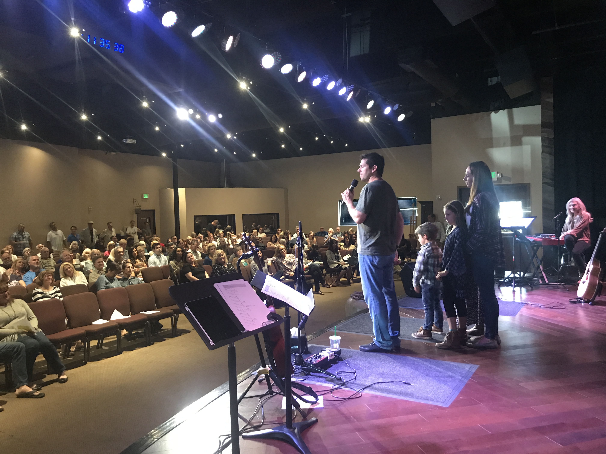

<ion-header>
  <ion-navbar color="nav">
    <button ion-button menuToggle>
      <ion-icon name="menu"></ion-icon>
    </button>
    <ion-title>Vineyard Messages</ion-title>
  </ion-navbar>
</ion-header>

<ion-content>
  
  <div class="sermon-desc">
    Hear messages from our church leaders!
    <br><br>
  </div>


  <ion-item class="youtube-embed">
     
        Sunday Morning | Aug 8, 2018
          <ion-item>
              <iframe width="100%" height="auto" src="https://www.youtube.com/embed/PDEXWaTyXC0" frameborder="0" allow="autoplay; encrypted-media" allowfullscreen></iframe>
          </ion-item>
 </ion-item>
 <ion-item class="youtube-embed">
        Saturday Night | July 28, 2018
          <ion-item> 
              <iframe width="100%" height="auto" src="https://www.youtube.com/embed/gXG59IszUY8?start=90" frameborder="0" allow="autoplay; encrypted-media" allowfullscreen></iframe>
          </ion-item>
 </ion-item> 

 <ion-item class="youtube-embed">
        Sunday Morning | June 24, 2018
      <ion-item> 
          <iframe width="100%" height="auto" src="https://www.youtube.com/embed/3TVLrMA9GM8" frameborder="0" allow="autoplay; encrypted-media" allowfullscreen></iframe>

          </ion-item>
</ion-item>
<ion-item class="youtube-embed">
    Sunday Morning | June 10, 2018
  <ion-item> 
      <iframe width="100%" height="auto" src="https://www.youtube.com/embed/b3TzlOrvPXo" frameborder="0" allow="autoplay; encrypted-media" allowfullscreen></iframe>
      </ion-item>
</ion-item>


     


  <!--       
  <ion-list>
    <button ion-item *ngFor="let item of items" (click)="itemTapped($event, item)">
    
      {{item.title}}
      <div class="item-note" item-end>
        {{item.note}}
      </div>
    </button>
  </ion-list>
  <div *ngIf="selectedItem" padding>
    You navigated here from <b>{{selectedItem.title}}</b>
  </div>
</ion-content>
-->